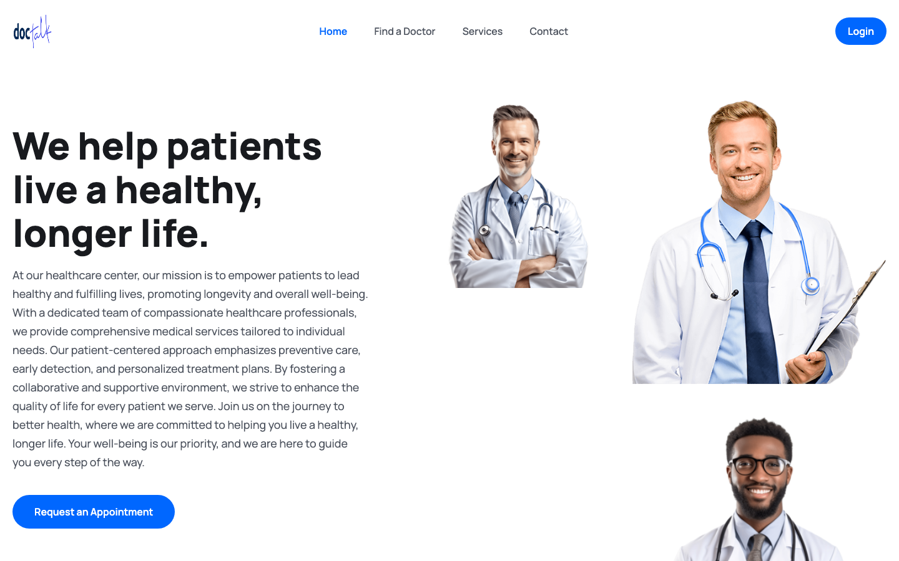
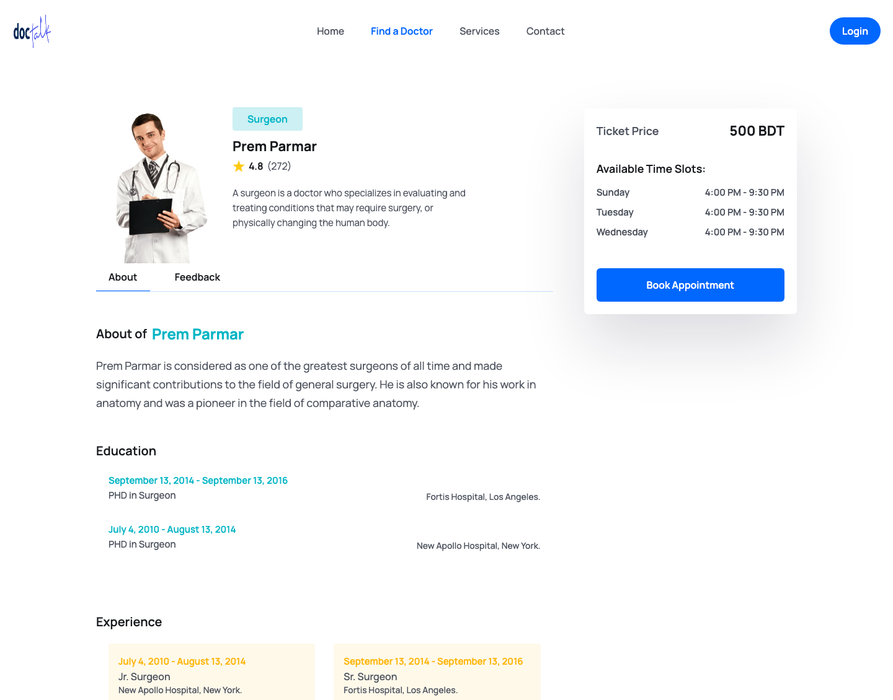
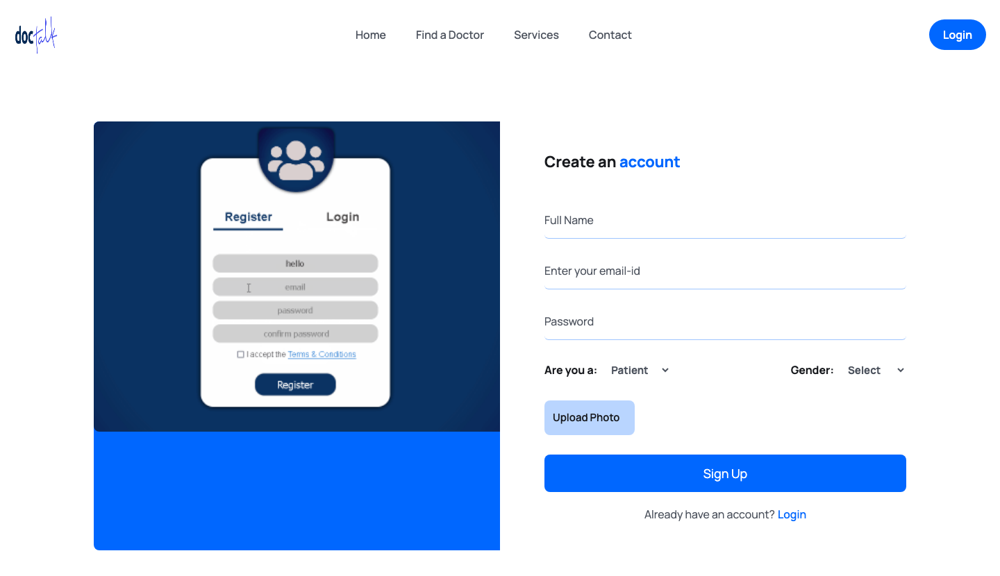
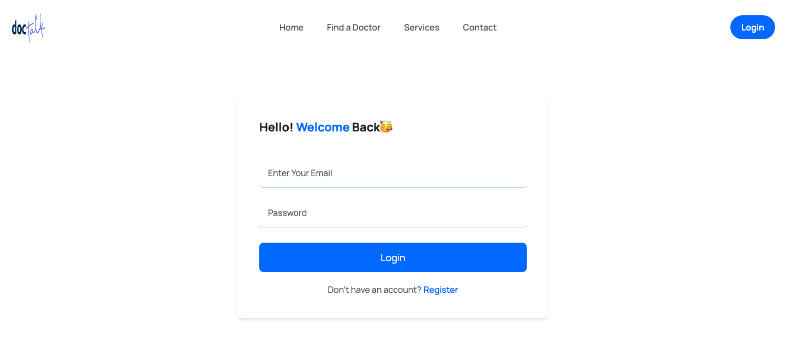
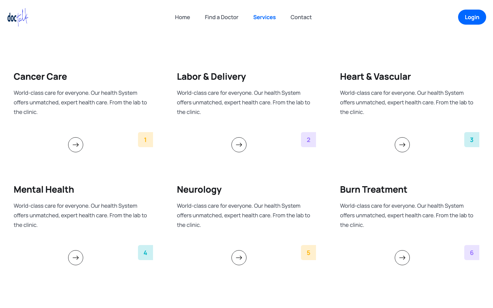

Doctor's Appointment System
docTalk is a doctor appointment booking website. Patients find a doctor, read their profile, see when they are available and book an appointment, while doctors get their own account and dashboard. It is a work in progress, built stage by stage by following a six-part MERN tutorial series. Four stages are done and two are under way, and this page grows with them.

Project status
Where It Stands
The project follows a six-part tutorial series, one part at a time. The first four parts are finished and working, and parts five and six are being built now. Last updated November 2026.
The problem
Why It Exists
Booking a doctor is still slow in many places. This project brings the whole flow online, from finding a doctor to paying and keeping a record.
Booking should not take a phone call
Finding a doctor and fixing a time usually means calling around. A website lets a patient do it in a few clicks.
See availability first
A patient can see a doctor's profile, ticket price and available days and times before deciding to book.
One place for both sides
Patients get an account to keep track of their appointments, and doctors get their own account to manage theirs.
Signed-in access only where it matters
Account pages are protected, so only the right person can open their own profile and appointments.
What is built
The Pages That Work Today
These pages are finished and running. The screenshots below were taken from the real app, running on a test database.
Built
Find a Doctor and Read Their Profile
Who can I book, and when are they free?
The Find a Doctor page lists doctors as cards with their photo, specialty, rating and hospital. Opening a doctor shows an About tab and a Feedback tab, their education and experience, the ticket price, and the days and times they are available.
- Doctor cards with specialty, rating and number of patients
- A profile page with About and Feedback tabs
- Ticket price and available time slots in a side panel
- The doctors shown are sample data for now, until the live doctor list is connected in stage 5

Built
Sign Up and Sign In
How do I get an account?
A new user chooses whether they are a patient or a doctor, fills in their name, email, password and gender, and can upload a profile photo. After that they sign in with their email and password.
- Separate patient and doctor accounts
- Profile photos stored with Cloudinary
- Passwords are stored in a scrambled (hashed) form, never as plain text
- A signed-in session that lasts 15 days


Built
Home and Services
What does the site offer?
The home page greets visitors with a clear call to book, explains how it works, and highlights the services, the doctors, common questions and patient testimonials. A Services page lists the areas of care, and a Contact page lets visitors get in touch.
- Landing page with how-it-works, doctors, FAQ and testimonials
- A Services page and a Contact page
- A layout that adjusts to phones and desktops

Behind the scenes
The Back End
A Node.js and Express server stores everything in MongoDB and decides who is allowed to do what.
Accounts and sign-in
Registering, logging in and checking who is who, with scrambled (hashed) passwords and a signed login token.
Doctors
Looking up all doctors or one doctor, and letting a doctor update or delete their own profile.
Reviews
Patients can leave a review and a rating for a doctor, and anyone can read them.
Patient accounts
A patient can view and update their profile and see the doctors they have booked.
The database
MongoDB stores users, doctors, reviews and bookings.
Role-based access
Some actions are limited to patients, others to doctors, so each person only sees what is theirs.
The build journey
Stage by Stage
The work is split into six stages, one for each part of the series. This list is updated as each stage moves forward.
Landing Pages
Tutorial part 1
Set up the project and built the home page: navigation, hero, how it works, about, services, features, doctors, FAQ, testimonials and footer.
Pages and Styling
Tutorial part 2
Built the rest of the interface in React and Tailwind CSS: the doctor list, doctor profile, sign-up, login, services and contact pages.
The Back End
Tutorial part 3
Built the Node.js, Express and MongoDB server with sign-up, login, doctors, reviews, user accounts and role-based access using JWT.
Connecting Front and Back
Tutorial part 4
Connected the website to the server: fetching data, shared sign-in state, protected pages and the patient account area.
Doctor Dashboard, Search and Reviews
Tutorial part 5
Building the doctor dashboard, working search, the review system, and making the home, doctor list and doctor profile pages show live data. The dashboard layout, the review form and the search box are in place, and wiring them to live data is under way.
Payments and Booking
Tutorial part 6
Adding Stripe checkout so a patient can pay for an appointment, saving the booking once the payment succeeds, and showing it in their account. The payment flow has been studied and the Book Appointment button is ready to be wired up.
Under the hood
Tech Stack
React
Tailwind CSS
Node.js
Express
MongoDB
JWT
Cloudinary